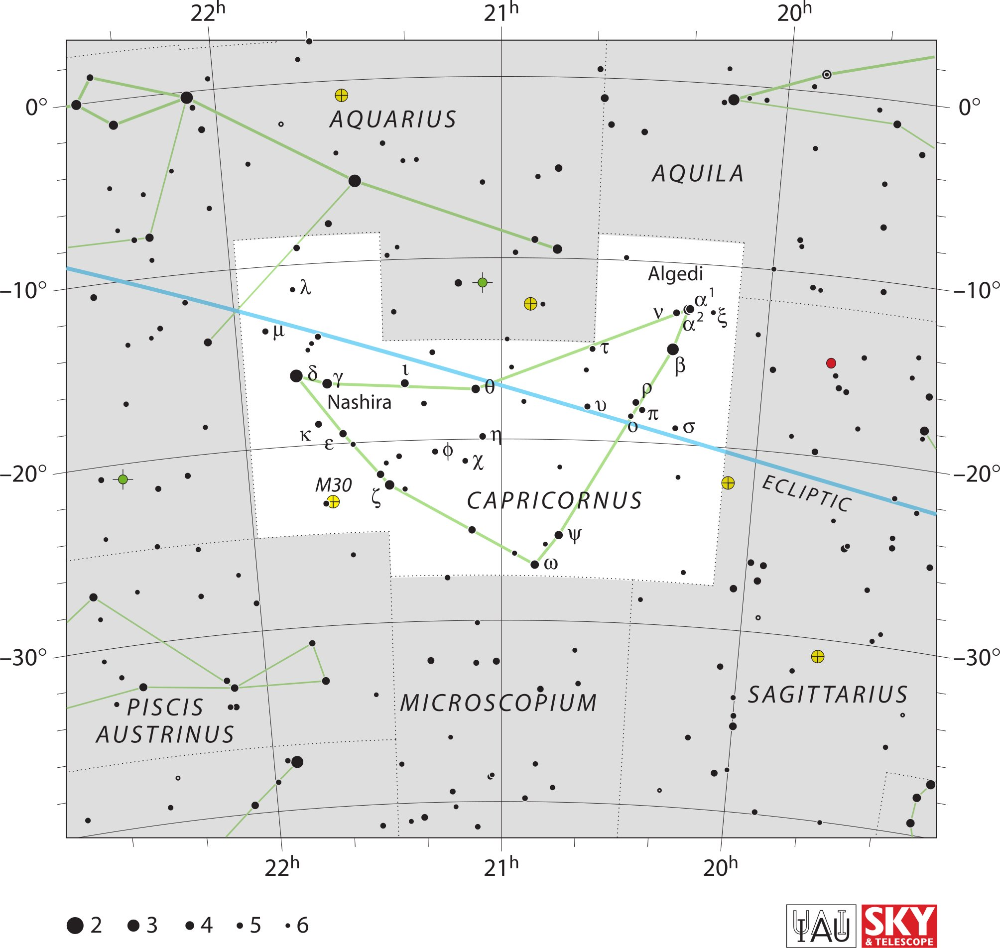

<div data-role="page" id="capricornus" data-theme="a">

	<div data-role="header">
		<a href="#home" data-icon="back" data-rel="back">Back</a>
		<h1>Capricornus</h1>
		<a href="#home" data-icon="home">Home</a>
	</div>

	<div data-role="content">
		<div class="cssImageMap">
			

			<a href="../messier/m30.html" class="messier" data-x="610"
				data-y="950" data-width="120" data-height="100"></a>


			<a href="aquarius.html" class="constellation" data-side="left"
				data-x="650" data-y="200" data-width="300" data-height="70"></a>

			<a href="aquila.html" class="constellation" data-side="right"
				data-x="1300" data-y="310" data-width="230" data-height="70"></a>

			<a href="sagittarius.html" class="constellation" data-side="right"
				data-x="1490" data-y="1360" data-width="350" data-height="70"></a>

		</div>
		<div id="here">
			<h2>Capricornus</h2>

			<p>Image Credit: IAU and Sky & Telescope magazine (Roger Sinnott
				& Rick Fienberg)
		</div>
	</div>
</div>